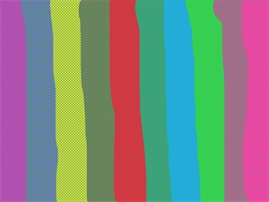

The
Paint Brush Tool (Tools --> Paintbrush) operates very similar to the
Pencil Tool.
The main difference being is that the Paint Brush Tool can use multiple widths
and different drawing styles.
The
Paint Brush Tool (Tools --> Paintbrush) operates very similar to the
Pencil Tool.
The main difference being is that the Paint Brush Tool can use multiple widths
and different drawing styles.

Pictured to the left are examples of the fill styles which the Paint Brush Tool can use. While these styles are nice, there is always the standard Solid Brush fill if nothing else catches your fancy.

Pictured to the left are various fill styles with different colors.